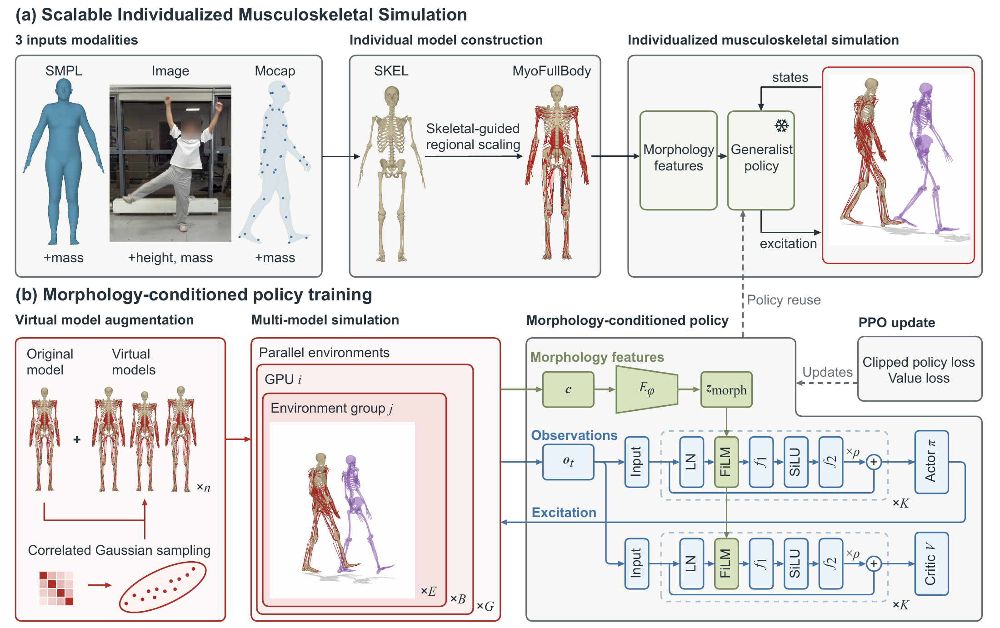

Accessible Model Construction
Builds 416-muscle full-body models from SMPL body shape, monocular images, or marker-based motion capture, cutting skeletal fitting error by 81.38% over global scaling.
A Framework for Scalable Individualized Musculoskeletal Simulation
with a Generalist Morphology-Conditioned Policy
Tsinghua University
MyoAcross is a GPU-accelerated framework for scalable individualized musculoskeletal simulation without fine-tuning.
Builds 416-muscle full-body models from SMPL body shape, monocular images, or marker-based motion capture, cutting skeletal fitting error by 81.38% over global scaling.
Pairs FiLM morphology conditioning with virtual model augmentation to reach 99.24% completion across 31 held-out models (vs. 8.32% for a generic-model baseline).
Transfers to image-derived models (99.29% on held-out individuals) and up to 10% unilateral lower-limb shortening, with quantified sensitivity to input perturbations.
Improves agreement with measured vertical ground reaction forces and sEMG over generic and globally scaled models on the external Gait120 dataset (120 subjects).

Musculoskeletal simulations powered by deep reinforcement learning (DRL) support human-robot interaction design and rehabilitation engineering, and they typically rely on a generic template model. However, differences in skeletal proportions and body mass alter dynamics, limiting the fidelity of generic models and the reuse of policies trained on them. Scaling individualized simulations requires a framework that connects model construction from accessible inputs with a generalist policy that transfers without fine-tuning. We present MyoAcross, which integrates skeletal-guided individual model construction, generalist morphology-conditioned policy learning, and virtual model augmentation for full-body muscle-driven control. Across 31 held-out individual models, MyoAcross achieves 99.24% completion with a 53.70 mm tracking error, compared with 8.32% completion for a baseline policy trained only on the generic model. Ablation studies show that morphology conditioning improves tracking accuracy while virtual model augmentation broadens generalization. Across input modalities, the pretrained policy demonstrates generalizability to models constructed from body shape (paired with mass), monocular images (paired with height and mass), and marker-based motion capture (paired with mass), making MyoAcross scalable. For biomechanical assessment, MyoAcross improves agreement with measured ground reaction forces and surface electromyography over the generic model on the external Gait120 dataset. These results establish MyoAcross as a practical framework for scalable individualized musculoskeletal simulation. It is suited for systematic cross-individual applications, such as exoskeleton DRL assistance policy design.
@misc{wang2026myoacross,
title = {A generalist policy for muscle-driven control across individual musculoskeletal models},
author = {Wang, Bozhao and Zhu, Yinglei and Li, Zhengqing and Zhang, Zhiyuan and Kang, Weiming and He, Yiheng and Liu, Xinjun and Hou, Senhao and Zhao, Huichan and Tang, Xiaoqiang},
year = {2026},
eprint = {2610.36535},
archivePrefix = {arXiv},
primaryClass = {cs.RO},
url = {https://arxiv.org/abs/2610.36535}
}